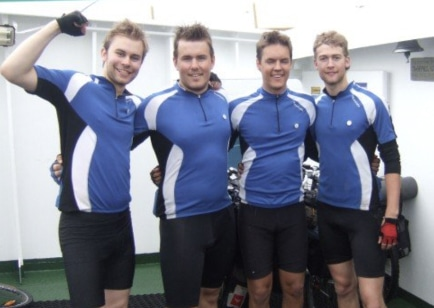

Tour de SCAM
Vi er fire gutter/menn/gubber som kjempet om heder og ære når Tour de France setter i gang. Her er historikk og statistikk fra årevis med Tourmanager.
Legenden Alaphilippe. Froome vs Wiggins for Sky. Schleck-brødrene, Contador og «chain-gate» — kjedet som falt av. Sagan på ett hjul. Voekler med evig krampe i ansiktet. Voigt og «shut up legs». Pinot som alltid kom litt for sent.
Cancellara på tempo. Cavendish i spurten. Boonen, McEwen i full fart. Bardet, Chavanel og Valverde i brudd. Hushovd, Kristoff og Boasson Hagen i norske farger.
Hver sommer er sin egen historie.
Henter fasiten …
Statistikk, tall og funfacts
Ingenting er morsommere enn en artig funfact eller statistikk som blåser deg i bakken.
Se statistikkEt over 20 år gammelt bilde:
Tony Mathiessen, Raymond Karlsen,
Jørgen Sørlie, Alexander Mathiessen
